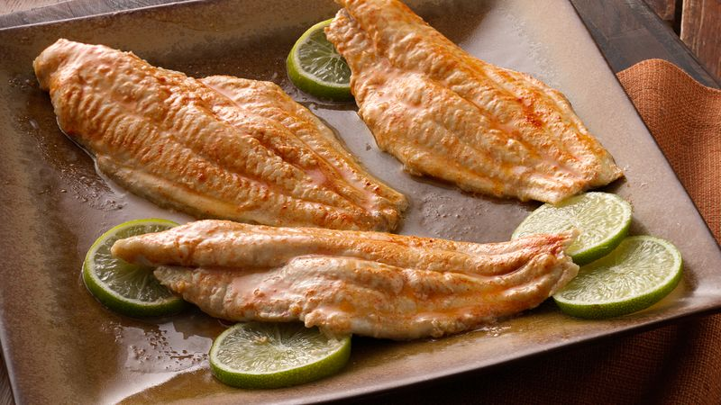

Bake Fish

Bake Fish Recipe
This Bake Fish recipe is super easy to make, and it can be served as a main dish or as a side dish.
Ingredients
- 3 tbspoons of honey
- 3 tbspoons of Dijon mustard
- 1 teaspoon lemon juice
- 4 salmon steaks
- 1/2 teaspoon pepper
Steps
- Preheat the oven to 325 degrees F
- In a small bowl, mix honey, mustard, and lemon juice. Spread the mixture over the salmon steaks. Season with pepper. Arrange in a medium baking dish
- Bake 20 min in preheated oven, or until fish easily flakes with a fork.